Introduction
What is a chemical? A chemical is a substance produced by or used in a chemical process: any substance with a defined composition. In other words, a chemical is always made of the same "stuff".
To engage fully with chemistry, you need a foundation in several key concepts and techniques. At the heart of chemistry lies atomic structure: understanding how protons, neutrons and electrons are organised in an atom.
The atom
An atom is the smallest particle of an element that keeps the properties of that element. Atoms are too small to be seen: this page is more than a million atoms thick. Scientists discovered from the way atoms behave that they contain even smaller sub-atomic particles: the proton, neutron and electron.
Atoms consist of a nucleus (the central core containing protons and neutrons) and electrons, which orbit the nucleus in regions called shells.
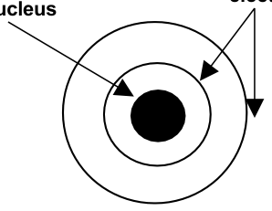
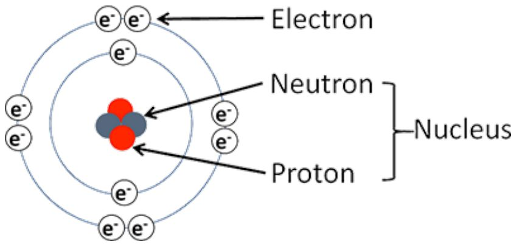
| Particle | Facts |
|---|---|
| Protons | found in the nucleus; each carries one positive charge |
| Neutrons | also found in the nucleus; carry no charge (neutral); about the same mass as a proton |
| Electrons | orbit the nucleus; each carries one negative charge; extremely small (a proton's mass is 1835 times an electron's) |
The number of electrons in an atom equals the number of protons, so the positive and negative charges balance: atoms are electrically neutral.
| Particle | Where found | Charge | Mass compared to proton |
|---|---|---|---|
| Proton | 1 | ||
| Electron | |||
| Neutron |
Atomic number and mass number
- The atomic number (Z) is the number of protons in the nucleus. Each element has a different atomic number. Helium has 2 protons, so its atomic number is 2; oxygen has 8 protons, so its atomic number is 8.
- The mass number (A) is the number of protons plus neutrons. Helium has 2 protons and 2 neutrons, so its mass number is 4; oxygen has 8 of each, so its mass number is 16.
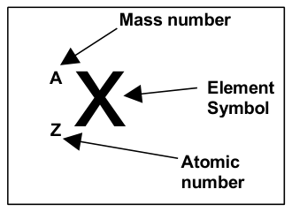
Exercise
- The atomic number of an atom is the number of in the nucleus.
- The mass number of an atom is the number of protons added to the number of .
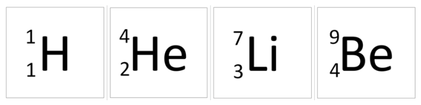
| 11H | 42He | 73Li | 94Be | |
|---|---|---|---|---|
| Name | ||||
| Protons | ||||
| Electrons | ||||
| Neutrons |
| Atom | Symbol | Mass number | Atomic number | Protons | Neutrons | Electrons |
|---|---|---|---|---|---|---|
| Calcium | 40 | |||||
| Fluorine | 19 | |||||
| Magnesium | 24 | |||||
| Phosphorus | 31 | |||||
| Sulfur | 32 | |||||
| Lithium | 7 |
Electron configuration
Electrons orbit the nucleus in energy levels or shells. Each shell can only hold a certain number of electrons. Shells closer to the nucleus have lower energy, and electrons always fill the lowest-energy shell first. The outermost shell is the valence shell.
| Shell | Maximum number of electrons |
|---|---|
| 1st | 2 |
| 2nd | 8 |
| 3rd | 18 |
| 4th | 32 |
| nth | 2n2 |
The electron configuration shows how the electrons are arranged around the nucleus.
| Element | Atomic number | Configuration | Element | Atomic number | Configuration |
|---|---|---|---|---|---|
| Helium | 2 | 2 | Neon | 10 | 2,8 |
| Carbon | 6 | 2,4 | Sodium | 11 | 2,8,1 |
| Calcium | 20 | 2,8,8,2 | Lithium | 3 | 2,1 |
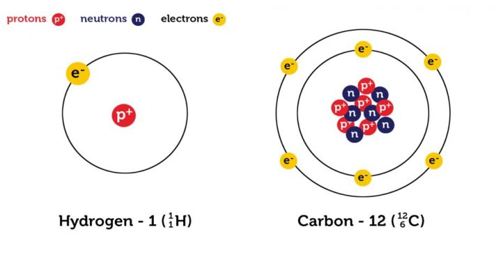
Complete the table for the first 20 elements. Write configurations with commas, e.g. 2,8,1.
| Element | Symbol | Electron configuration | Metal / non-metal / metalloid |
|---|---|---|---|
| Hydrogen | |||
| Helium | |||
| Lithium | |||
| Beryllium | |||
| Boron | |||
| Carbon | |||
| Nitrogen | |||
| Oxygen | |||
| Fluorine | |||
| Neon | |||
| Sodium | |||
| Magnesium | |||
| Aluminium | |||
| Silicon | |||
| Phosphorus | |||
| Sulfur | |||
| Chlorine | |||
| Argon | |||
| Potassium | |||
| Calcium |
Atomic models
Atoms are 3-dimensional, so they are hard to draw. Scientists use simple diagrams, or models, with the nucleus in the centre and the electrons orbiting in their shells.
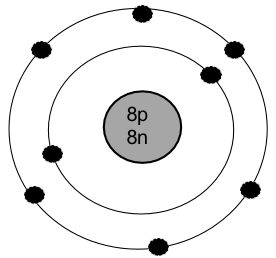
Sodium atoms contain 11 protons and 12 neutrons. Sodium atoms have electrons. The electron configuration is . The outer shell contains electron. The number of electron shells is .
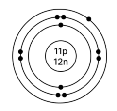
Describe the atomic models for magnesium, oxygen, carbon, neon and potassium (number of protons, neutrons and electrons in each shell).
Magnesium: 12p, 12n; electrons 2,8,2. Oxygen: 8p, 8n; 2,6. Carbon: 6p, 6n; 2,4. Neon: 10p, 10n; 2,8. Potassium: 19p, 20n; 2,8,8,1.
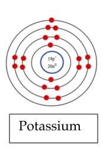
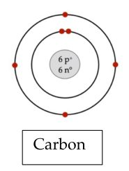
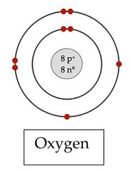
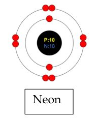
Atomic structure particle puzzle
All these words have something to do with atoms and molecules.
| Clue | Scrambled | Word |
|---|---|---|
| 1. Particle with a negative charge | RENTLOCE | |
| 2. Made up of atoms which all have the same atomic number | MELTEEN | |
| 3. Needed for motion | GREENY | |
| 4. Charged atom or group of atoms | NOI | |
| 5. Same number of protons, different number of neutrons | POSITOE | |
| 6. Anything which takes up space | TETRAM | |
| 7. Smallest bit of a substance which can normally exist | UMOCELLE | |
| 8. Number of protons in a hydrogen atom | NEO | |
| 9. Charge on an electron | GENAVITE | |
| 10. Nuclear particle with no electric charge | TUNNORE | |
| 11. Central part of the atom | SCLUUNE | |
| 12. Very small bit of matter | RAPTLICE | |
| 13. Charge on a proton | PISOVITE | |
| 14. A particle in the nucleus | TORNOP |
Atomic structure revision
The atomic number tells you the number of protons in one atom of an element, and the number of electrons in the neutral atom. It gives an element its identity and its place on the periodic table: no two elements have the same atomic number.
The atomic mass of an element is the average mass of its naturally occurring atoms (isotopes): approximately the total number of protons and neutrons in the nucleus.
Name the three particles of an atom and their charges: proton, ; neutron, ; electron, .
Name the element with these particles. Include charges and mass numbers where possible.
| Particles | Element | Mass number |
|---|---|---|
| 26 protons, 26 electrons, 29 neutrons | ||
| 53 protons, 74 neutrons | ||
| 2 protons, 2 electrons (neutral atom) | ||
| 20 protons | ||
| 82 protons, 78 electrons, 125 neutrons (charged) | (ion: ) |
82 protons with 78 electrons means it has lost 4 electrons, giving a 4+ charge: Pb4+. Without the number of neutrons, the mass number can't be determined.
| Substance | Symbol | Atomic number | Mass number | Protons | Neutrons | Electrons |
|---|---|---|---|---|---|---|
| Helium | 2 | 2 | ||||
| Magnesium | 24 | 12 | ||||
| Zinc | Zn | 35 | 30 | |||
| Bromine | 35 | 80 | 35 | |||
| Aluminium | 13 | 14 | 13 | |||
| Uranium | 92 | 238 | 92 | |||
| Sodium | Na | 11 | 12 | |||
| Hydrogen | H | 1 | 1 | 1 | ||
| Silver | 47 | 47 | 47 | |||
| Mercury | 80 | 201 | 80 | |||
| Iodine | I | 127 | 53 | |||
| Potassium | 20 | 19 |
Exercise: electron configuration
Give the electron configuration for each atom.
| Atom | Protons and neutrons | Configuration |
|---|---|---|
| Beryllium (Z = 4, mass 9) | 4p, 5n | |
| Sodium (Z = 11, mass 23) | 11p, 12n | |
| Sulfur (Z = 16, mass 32) | 16p, 16n | |
| Fluorine (Z = 9, mass 19) | 9p, 10n | |
| Phosphorus (Z = 15, mass 30) | 15p, 15n | |
| Argon (Z = 18, mass 40) | 18p, 22n | |
| Magnesium (Z = 12, mass 24) | 12p, 12n | |
| Nitrogen (Z = 7, mass 15) | 7p, 8n |
| Substance | Total number of electrons | Number of valence electrons |
|---|---|---|
| Hydrogen | ||
| Lithium | ||
| Beryllium | ||
| Carbon | ||
| Fluorine | ||
| Fluoride (F−) | ||
| Chlorine | ||
| Chloride (Cl−) | ||
| Aluminium |
An ion has a different number of electrons from its atom: fluoride has gained one electron to fill its outer shell (2,8).